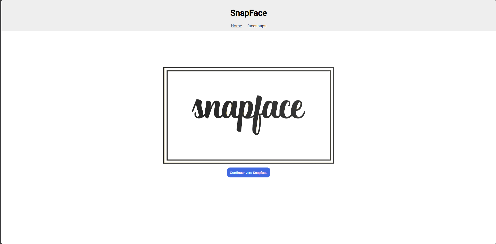
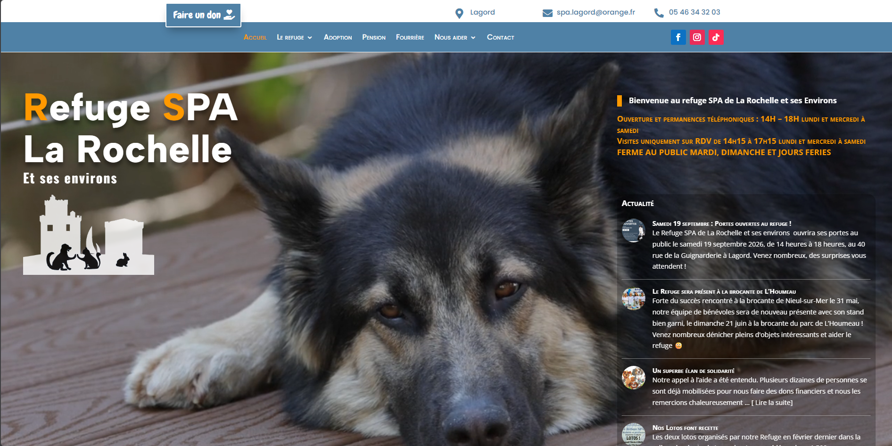

À propos
Un peu plus sur moi
J’ai 25 ans et je suis développeur web full stack. Mon parcours m’a permis d’explorer le développement d’applications sous plusieurs angles, du web à la conception de solutions numériques.
Ma boîte à outils
Je travaille avec plusieurs technologies et j’apprécie autant la réflexion autour de la structure d’une application que le soin apporté à son interface et à son usage.
- PHP
- JavaScript
- TypeScript
- SQL
- Symfony
- Vue.js
- Docker
- Angular
- Java
Curieux et motivé, je souhaite continuer à apprendre et contribuer à des projets concrets, utiles et bien conçus.
Réalisations
Projets
Une sélection de travaux récents — produits livrés, outils open source et expérimentations personnelles.

2026
Snapface
Application développée avec Angular pour découvrir le framework.
Parcourez les snaps partagés et aimez vos publications préférées.
Rôle : développeur.
Angular
Résultat : une démo interactive publiée en ligne.
Voir la démo de Snapface
Voir le code sur GitHub

2023 - 2024
Refonte du site de la SPA de Lagord
Refonte du site internet de la SPA de Lagord pour mieux présenter l’association et ses actions.
Maquettes réalisées avec Figma, puis intégration et mise en ligne avec WordPress.
Rôle : développeur.
Figma · WordPress
Résultat : site refondu et mis en ligne.
Visiter le site de la SPA de Lagord
Voir le code sur GitHub